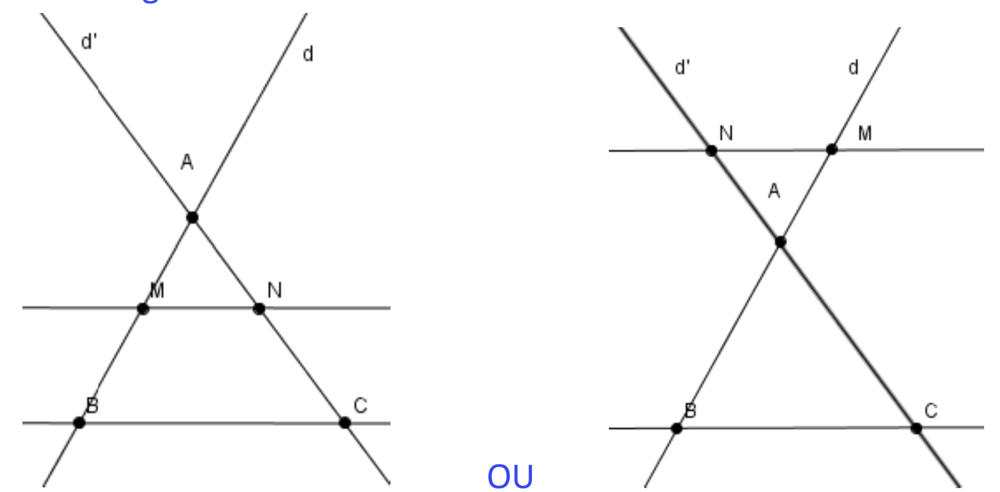
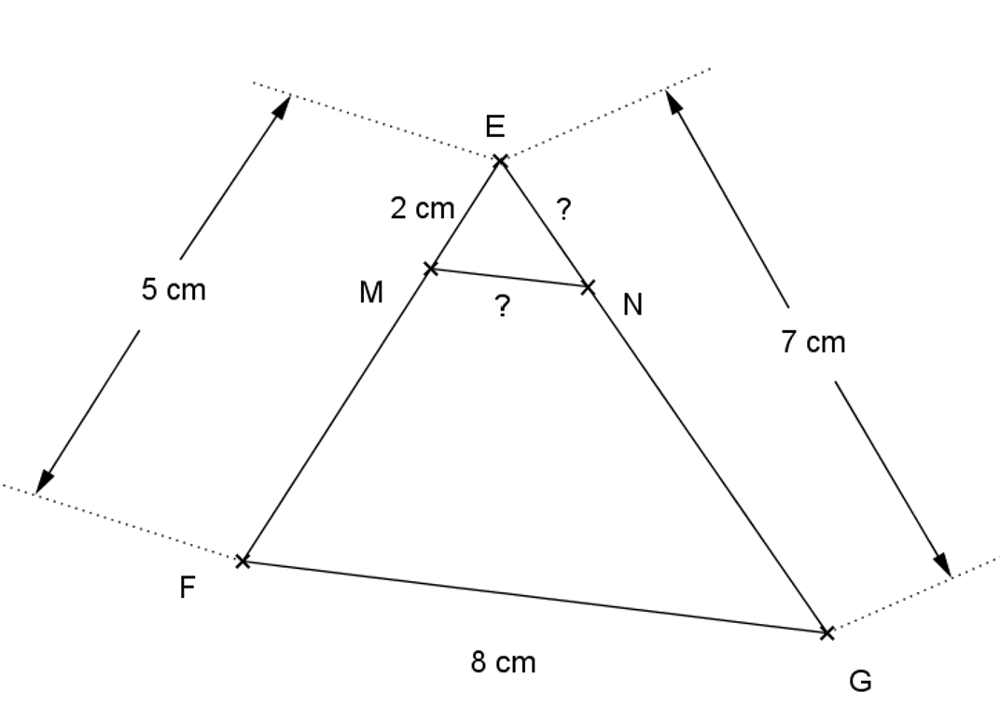
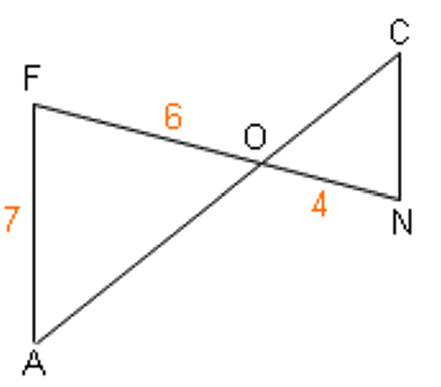
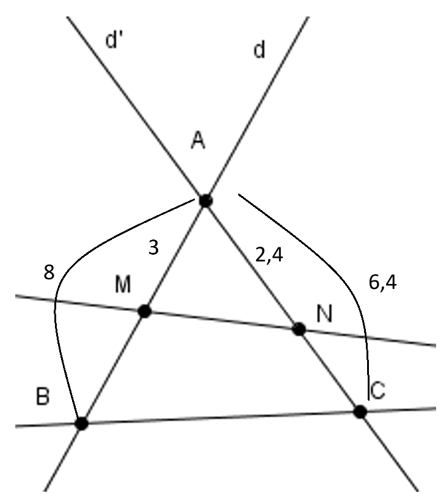
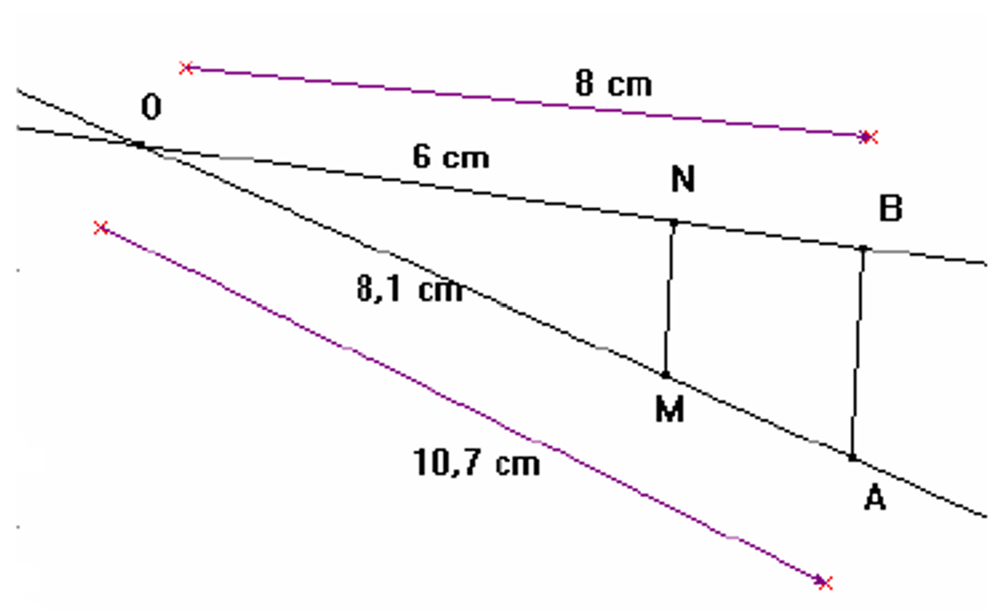
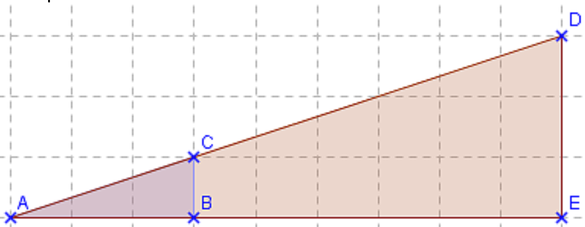

Chapitre 2 : Théorème de Thalès
Produit en croix
Afin de pouvoir utiliser le théorème de Thalès convenablement, il est impératif de bien maîtriser le produit en croix (ou règle de trois). On utilise le produit en croix pour résoudre des équations du style :
x3 = 56
Exemple :
x3 = 56
On obtient 6 × x = 3 × 5
puis x = 3 × 56 = 156 = 2,5
Théorème de Thalès
Propriété : Soient deux droites (d) et (d') sécantes au point A.
Soient B et M deux points de (d) distincts de A et soient C et N deux points de (d') distincts de A.
Si les droites (BC) et (MN) sont parallèles, alors AMAB = ANAC = MNBC
Cas de figure:

Exemple 1 : Dans cette figure, on a (MN) et (FG) qui sont parallèles.

Calculer EN et MN.
- Les droites (EF) et (EN) sont sécantes en E.
- Les droites (MN) et (FG) sont parallèles.
- D'après le théorème de Thalès :
EMEF =
ENEG =
MNFG soit
25 =
EN7 =
MN8
D'où EN =
2 × 75 =
145 = 2,8
Et MN =
2 × 85 =
165 = 3,2
Exemple 2 : Calculer CN dans le cas suivant sachant que (FA) et (CN) sont parallèles.

- Les droites (FN) et (AC) sont sécantes en O.
- Les droites (FA) et (CN) sont parallèles.
- D'après le théorème de Thalès :
OCOA =
ONOF =
CNAF soit
OCOA =
46 =
CN7
D'où CN =
4 × 76 =
286 ≈ 4,67
Réciproque du théorème de Thalès
Propriété : Soient deux droites (d) et (d') sécantes au point A. Soient B et M deux points de (d) distincts de A et C, N deux points de (d') distincts de A :
Si les points A, M, B et A, N, C sont alignés dans cet ordre et si AMAB = ANAC,
Alors les droites (BC) et (MN) sont parallèles.
Exemple : Dans cette figure, montrer que (BC) et (MN) sont parallèles.

On a :
D'une part AMAB = 38
D'autre part ANAC = 2,46,4 = 2464 = 38
Ainsi AMAB = ANAC et les points sont alignés dans le bon ordre.
D'après la réciproque du théorème de Thalès les droites (BC) et (MN) sont parallèles.
Contraposée du théorème de Thalès
Propriété : Soient deux droites (d) et (d') sécantes au point A. Soient B et M deux points de (d) distincts de A et C, N deux points de (d') distincts de A :
Si les points A, M, B et A, N, C ne sont pas alignés dans cet ordre ou si AMAB ≠ ANAC,
Alors les droites (BC) et (MN) ne sont pas parallèles.
Exemple :
Les droites (NM) et (AB) sont-elles parallèles ?

On a :
D'une part ONOB = 68
D'autre part OMOA = 8,110,7
6 × 10,7 = 64,2 et 8 × 8,1 = 64,8 donc 68 ≠ 8,110,7
Ainsi ONOB ≠ OMOA, d'après la contraposée du théorème de Thalès les droites (MN) et (BA) ne sont pas parallèles.
Agrandissement et réduction
Définitions :
On obtient un agrandissement d'une figure en multipliant toutes les dimensions par un même nombre k > 1.
On obtient une réduction en multipliant toutes les longueurs par un nombre k < 1.
Le nombre k est le rapport (ou coefficient) de réduction ou d'agrandissement.
Propriété : Dans un agrandissement ou une réduction, les mesures des angles sont conservées (en conséquence, la perpendicularité et le parallélisme sont conservés).
Propriété : Dans un agrandissement ou une réduction de rapport k,
• Le périmètre d'une figure est multiplié par k
• L'aire d'une surface est multipliée par k²
• Le volume d'un solide est multiplié par k³
Exemple :

Le triangle ADE est un agrandissement du triangle ACB et k = ADAC = AEAB =93 = 3
Le triangle ABC est une réduction du triangle AED et k = ACAD = ABAE = 39 =13 ≈ 0,33
ADE est un agrandissement de ABC de rapport 3, ainsi le périmètre de ADE est trois fois plus grand que celui de ACB et l'aire de ADE est 3² = 9 fois plus grande que celle de ABC.